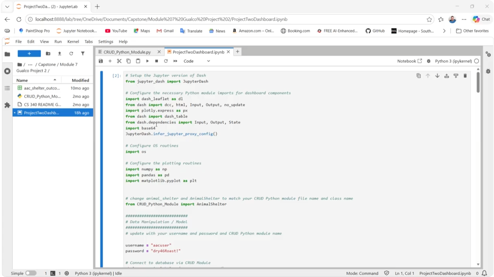
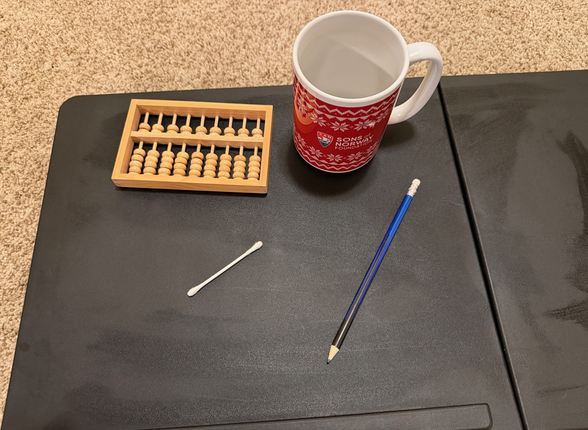
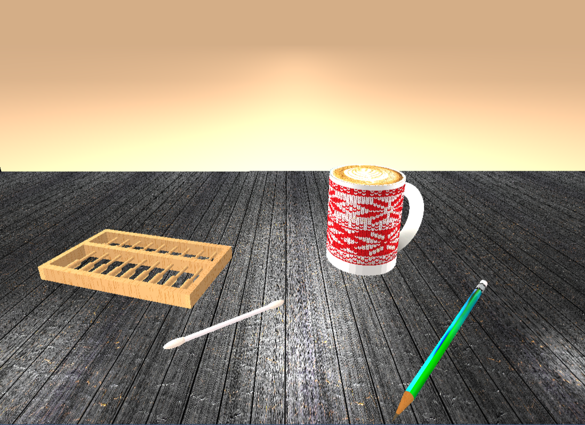
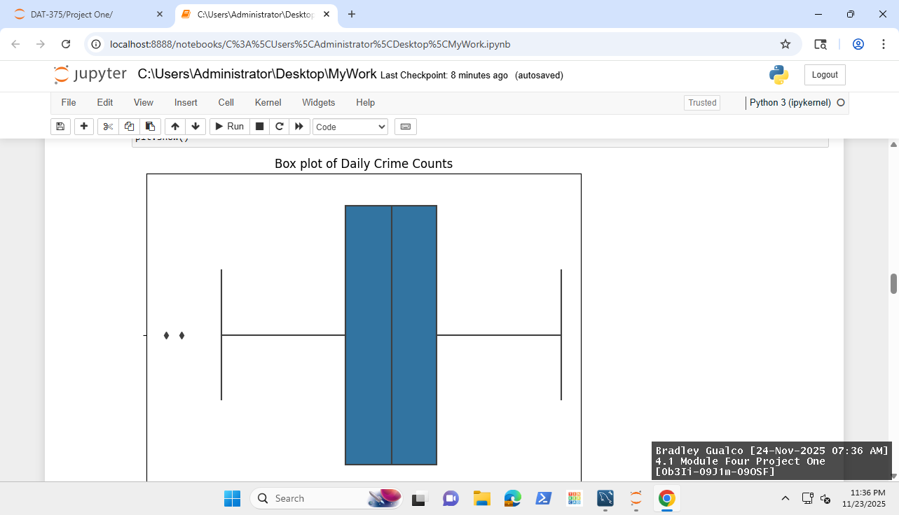
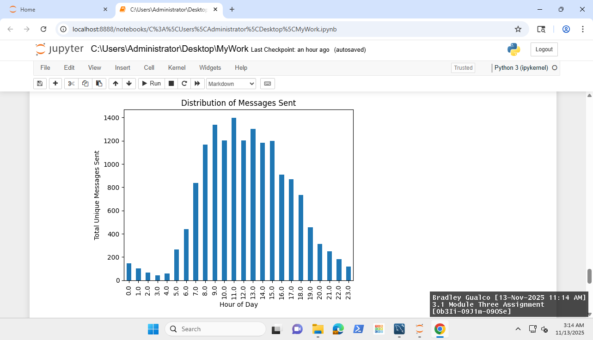
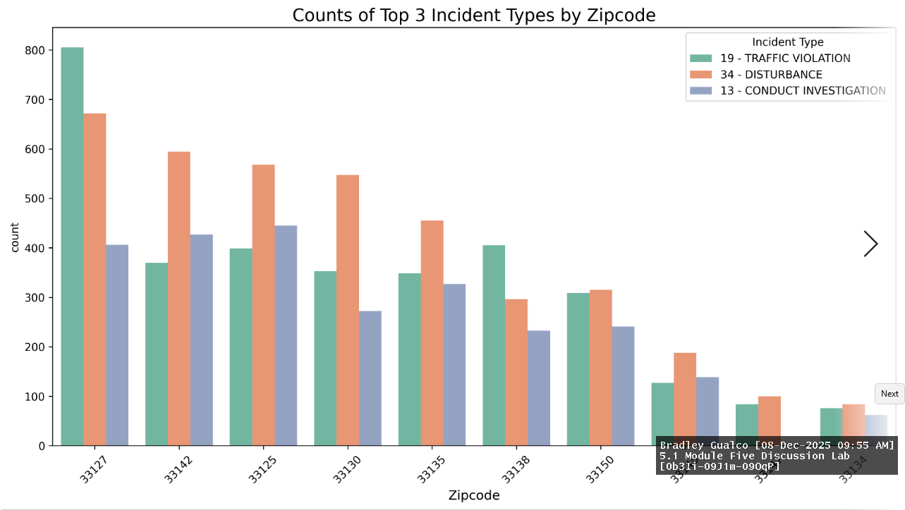
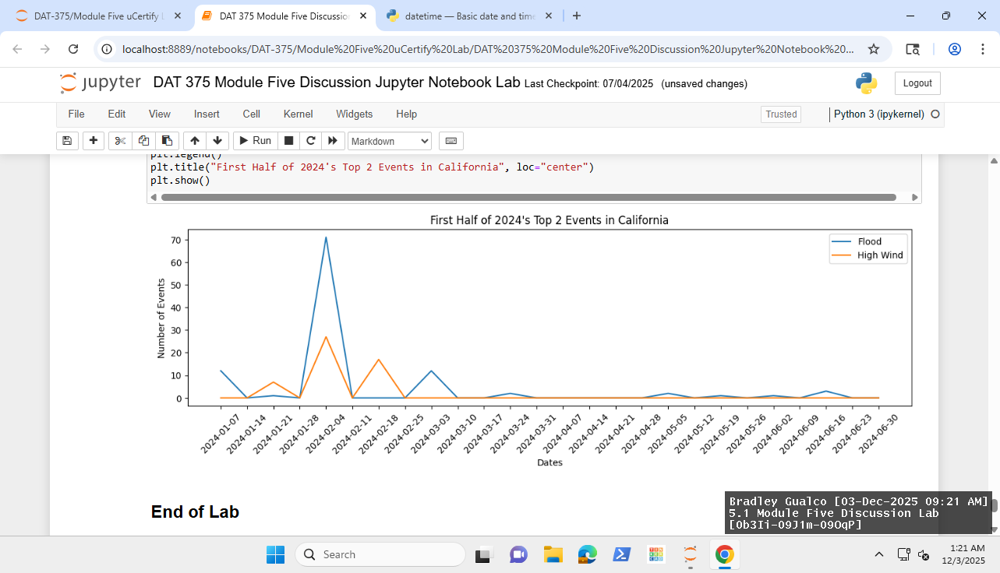

Click to view the Original Artifact

Figure 1 shows the original logo and filter options.

Figure 2 shows the original map with hoverable and clickable features.

Figure 3 shows the original pie chart.
🎓 Under Construction
I began the Computer Science program, at SNHU, in 2024. Before that I had earned an AA in General Education from Yuba College and an AS in
Information Technology from SNHU. I also took some courses at Arizona State University’s Ira A. Fulton Schools of Engineering. I have a strong background
in mathematics (e.g. Modern Differential Equations and Signals & Systems) and science (e.g. Physics III and Organic Chemistry).
Throughout the SNHU program,
I have learned about working with the MEAN stack (MongoDB, Express, Angular, and Node.js) and adding CRUD (Create, Read, Update, and Delete) functionality.
I now have skills using best practices in programming with C++, Java, and Python. This includes planning with pseudocode, creating software design documents,
iteration, commenting code, JUnit testing, the Software Development Life Cycle, using MVC (model, view, and controller pattern), computer graphics and much
more. I learned data analysis techniques using Pandas, Seaborn, Matplotlib, Numpy, MySQL, etc.
In this project, I will demonstrate my skills with the Python
programming language. Specifically, I will focus on implementing solutions using data analysis techniques, communication through the read-me file and code
commenting, using best practices, using the MVC pattern, using efficient database queries, and using security techniques to safeguard the data. My degree is in
Computer Science with a concentration in data analysis. This demonstration will allow employers to view the skills that were developed for data analysis and
full stack development.
My career plans are to develop visualizations that give actionable insights for making future business decisions. I want to create
dashboards where the user can truly understand the data and its implications. The freedom to design computer applications along with the data visualizations
will be very beneficial to meeting business goals and demands. Since I’ve worked in pharmacy for many years, my natural specialization would be in healthcare
and pharmacy. The skills being demonstrated can be used to decrease errors, find efficiencies, mangage inventory better, increase compliance with laws and
regulations, improve patient satisfaction scores, increase medication compliance, etc. My career is one of discovery and data that is cleaned, analyzed,
and visualized can lead to many new discoveries.
This ePortfolio will demonstrate the following outcomes:
The Grazioso Salvare application was developed to create meaningful insights from animal data. This artifact was created in early 2026.
The artifact was a project from SNHU (CS 340) and shows use of CRUD database operations, MCV organization, and Data Analysis Techniques.
A logo appears at the top and there is a data table that displays the data. There are filtering options and radio items for convenient filtering.
There is a pie chart to show breed options, a map to locate and identify a particular animal, and a bar chart to show outcomes based on radio item selection.
Click to view the Original Artifact
Figure 1 shows the original logo and filter options.
Figure 2 shows the original map with hoverable and clickable features.
Figure 3 shows the original pie chart.
This is a code review of my CS-340 project at SNHU. The application uses the MCV pattern to create a table, map, and visualization of rescue animal data. The application uses MongoDB and Python. There is an accompanying Jupyter Notebook that demonstrates the CRUD functionality and testing for error handling. The application includes radio items and a map with hover and click features. The table can be filtered and sorted. Enhancements will include changing the database to MySQL, defining datatypes and designing new queries, and adding another visualization for more practical insight into the data. A map issue will be resolved such that the selected animal will appear centered on the map and the map will refresh correctly. Role-based access will be implemented on the MySQL database, and radio items will help prevent SQL injection attacks. A CSS file will be added to demonstrate the ability to alter style across the application.

Click to view the Code ReviewSkills and Abilities Acquired from the Artifact
This artifact was chosen because of the wide range of skills and abilities that it requires in software development. The artifact was written in Python,
uses MongoDB for the database and Dash for the view. There is an inclusion of some HTML and CSS, in addition. Besides the use of CRUD (Create, Read, Update,
Delete), MCV (Model, Controller, View), and Data Analysis Techniques, it also includes a ReadMe file that communicates the features of the project for use by
other professionals. Communication is a key component to software development. Another reason that I chose this artifact is that I find dashboards insightful
for changing dynamically with the filtering of the data. It allows the data to be visualized and shared in a meaningful way.
The artifact was improved with
changes to the ReadMe file to communicate better. The FAB (floating action button) for debugging was removed for a production ready application, comments were
updated, deprecated features were updated to enhance security and functionality, some changes to the code were made for clarity and readability, and a bar chart
was added to show more insights into the data. The bar chart included data analysis techniques. I had to clean the data before using it to create the bar chart
because the raw data had some empty strings. This cannot be eliminated with a simple dropna() function because the value was not null. My data analysis
concentration classes allowed me to navigate this issue.
Course Outcomes Met
This enhancement has exceeded my expectations for meeting the course outcomes. The first course outcome is to work with a collaborative mindset. This is achieved
by updating the Readme file and updating the comments in the code. Also, cleaning up the code format was essential in creating a more collaborative product.
The second course outcome was to work with communication that is technically sound and appropriate for the audience. The Readme file was updated to include
essential information for the enhancements and code was commented for clear explanations of the code. In addition, the bar chart communicated the outcomes
of the animal types for the users of the application. The bar chart was visual communication that was technically sound, by using cleaned and filtered data.
The third course outcome was reached by inclusion of the CSS file that allows the design to be altered. This helped create a more visually appealing application
with global font styles and a more eye-friendly background color. The addition of the bar chart allowed for a solution to visualize data for additional insights.
The fourth course outcome was reached by creating more value for the user. The application shares data on the outcomes of the selected animals and I also
enhanced the map to center the marker when an animal is chosen. Before the enhancement, I had to zoom the map out to locate the new marker.
The fifth course outcome was to keep security in mind. I did this by making changes to the software to eliminate deprecated software inclusions.
For instance, I updated from JupyterDash to Dash and this helps ensure that the most up-to-date and secure options are used.
Challenges and Reflection
One challenge I faced, in this enhancement, is the change from the Codio (Linux) environment to my local machine (Windows) environment. I had to get a new
computer, so I needed to install all the software packages again. To work properly, I had to add some of the software packages to my path in System Environment
Variables. My original ReadMe file did not include instructions to install the MongoDB tools and Mongosh. I found out that these needed to be installed,
separately, and are not included in the MongoDB installation. Then I had to import the CSV file into MongoDB. I needed to add the png file for the logo into
the same folder as the other files because it was missing. Then I found out that JupyterDash was deprecated and I had to change the code throughout.
Additionally, I noticed that the map was not centering the marker and was bigger than the pie chart (a visually distracting occurrence). Every component had
a different font, so I had to figure out how to get it all the same. My bar chart did not show, originally. I found out that I had an underscore on a variable
instead of a hyphen and it fixed the issue. I, then, noticed that there was a bar, on the bar chart, that was blank and realized that the data needed to be
cleaned. The bar chart had lower case and underscored titles for the x and y axis, so I had to make those more readable and appealing to a user. My screenshots
on my ReadMe file showed the old Codio environment, a sidebar and top bar. I had to update all of those as well. I also had confusion with the layout section
of the code, it was missing a bracket or parenthesis, so I had to clean that up and make it more understandable.
Click to view Enhancement One
 Figure 4 shows the new application with changes to CSS properties.
Figure 4 shows the new application with changes to CSS properties.
 Figure 5 shows the new visualization (bar chart) that allows for insights into animal outcomes.
Figure 5 shows the new visualization (bar chart) that allows for insights into animal outcomes.
Skills and Abilities Acquired from the Artifact
I selected this artifact because it was originally using a MongoDB database and I want to give the option to switch to a MySQL database. To do this work,
it requires knowledge of the MySQL language. It also requires creating algorithms and structures that work with this structured database. The artifact was
improved by creating a structured table with appropriate datatypes (VARCHAR, DECIMAL, UNSIGNED INT) and ACID compliance. ACID stands for Atomicity
(all or nothing), Consistency, Isolation, and Durability which is great for companies that require a great deal of accuracy and care with their data.
MongoDB uses a B-Tree structure and MySQL uses a B+Tree structure
(Kagoshima, 2025).
The speeds in Big O notation are similar for each database, O(log n), for most operations
(Kagoshima, 2025).
Optimization of accuracy is achieved with the MySQL database. However, using the MongoDB database gives the opportunity for sharding, or horizontal scaling.
MySQL, typically using vertical scaling.
Course Outcomes Met
I have met all outcomes with this enhancement. I have included significant comments and updates to the ReadMe file for communication and collaboration,
which meets the first two outcomes. I discussed the advantages and disadvantages of switching from MongoDB to MySQL. I discussed the tradeoffs and provided
computing solutions for the alternatives available. I created test files to demonstrate the coding solutions to deliver value and meet industry-specific goals.
I created role-based access with the MySQL database and kept security in mind. I also defined the datatypes in the table, enhancing security.
Challenges and Reflection
The first thing I had to do was to get the csv file into a MySQL database. I created a database and a table. I needed to define the datatypes for the columns
of the table. I created a file that imported pandas and it counted the datatypes for me. I converted those datatypes to ones that are specific to MySQL and
entered them using the command prompt. I also created a user and specified the user’s role for enhanced security. I didn’t want to use the root, which has
all access, so I limited the access for data integrity and protection. Next, I created a file to test the database and specific queries used for the web
application. One of the challenges was in trying to gauge the number of characters (memory space) that would be required for each element in the table. The
nice thing about MySQL, however, is that the age range was easy to implement. The biggest challenge was that loading local data was disabled and I had to
set the Global local_infile variable to 1, temporarily, to download the csv file and then change it back to 0 afterwards. For security purposes, it should
be changed back to 0.
Click to view Enhancement Two

Figure 6 shows user creation and role-based privileges being defined.

Figure 7 shows the MySQL table that was designed with the specific datatypes and memory allocation.
Skills and Abilities Acquired from the Artifact
This artifact was chosen because it uses MongoDB and I wanted to give the option to switch to a MySQL database. There are advantages and disadvantages
to both databases and it was important to allow for alternatives. MySQL is used by companies that require ACID or extra care about accuracy, with the data.
MySQL scales vertically, however, and MongoDB scales horizontally. The advantage of MongoDB is that the database is very flexible. MySQL is more defined and
structured. There are uses for both and I felt that it is important to have both available. I also improved the map on this application to center the marker
on the selected animal and to update regularly. This weeded out a bug that was frustrating the user. I also created test scripts for the CRUD operations
for MySQL. This application uses the Read functionality of the CRUD module. The user doesn’t have a way to engage in an SQL injection attack, so there is a
nice level of security by using the radio items for the specific searches.
Course Outcomes Met
I updated the ReadMe file to incorporate the MySQL database and this fulfills the first two outcomes for building collaboration and designing communications
that are for specific audiences and technical in nature. The options to use either database, MongoDB and MySQL, demonstrates the outcomes that allows for
design trade-offs to be considered and delivers value for industry-specific goals. Keeping the inputs from allowing SQL injection attacks demonstrates the
outcome of keeping security in mind. Also, fixing bugs, such as the map marker updating correctly is always a good security measure. The database was fixed
with a username and password and role-based access was created. This prevents unauthorized access to the database and limits the features that may be accessed
to the necessary functions.
Challenges and Reflection
One of the big challenges was that the table was showing, but the visualizations weren’t there. After observing the table, I realized that it didn’t have
column headers, so I added a separate line to get the column headers and put them in the dataframe. Then, it started working. I noticed that there was a
problem with the map. Originally, the marker wasn’t centered on the screen for the selected animal and I had to manually manipulate the map location. I
changed the code to center the selected animal, with its coordinates. Then I noticed that clicking the marker would add a pop up for the animal name, but
the next selected animal would not be updated to a new marker placement until the marker was clicked a second time. I fixed this by wrapping the map in
html.div and adding a key for the single row. When the key changes, a new map is rendered. Now, it works as expected.
 Figure 8 shows the first screenshot of the CRUD Testing Script in Jupyter Notebook and database connection.
Figure 8 shows the first screenshot of the CRUD Testing Script in Jupyter Notebook and database connection.
 Figure 9 shows the second screenshot of the CRUD Testing Script in Jupyter Notebook and the Create and Read functionality.
Figure 9 shows the second screenshot of the CRUD Testing Script in Jupyter Notebook and the Create and Read functionality.
 Figure 10 shows the third screenshot of the CRUD Testing Script in Jupyter Notebook and the Update and Delete functionality.
Figure 10 shows the third screenshot of the CRUD Testing Script in Jupyter Notebook and the Update and Delete functionality.
 Figure 11 shows the beginning of the ReadMe file that communicates the details to other professionals for collaboration.
Figure 11 shows the beginning of the ReadMe file that communicates the details to other professionals for collaboration.
Computer Graphics
In my graphics class, my project was to recreate some real-life objects and make 3D graphics with lighting and textures added.
In this project, I created a mug for coffee, an abacus, a pencil and a q-tip. The camera moved left, right, up, down, forward and backwards.







Kagoshima, A. (2025, March 17). Select a DB. Selecting Between MongoDB and SQL. Retrieved on June 7, 2026 from https://medium.com/@a.kago1988/why-and-when-mongodb-is-faster-than-mysql-a-mathematical-analysis-2373ab9f6936